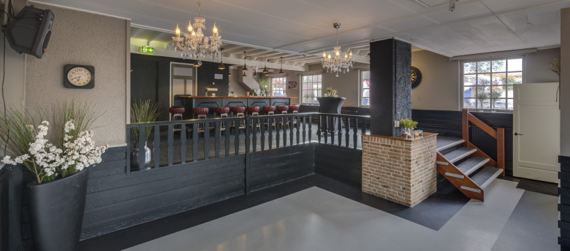
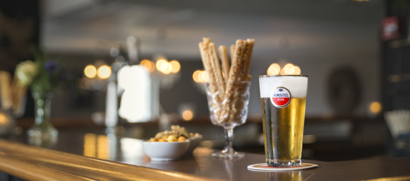
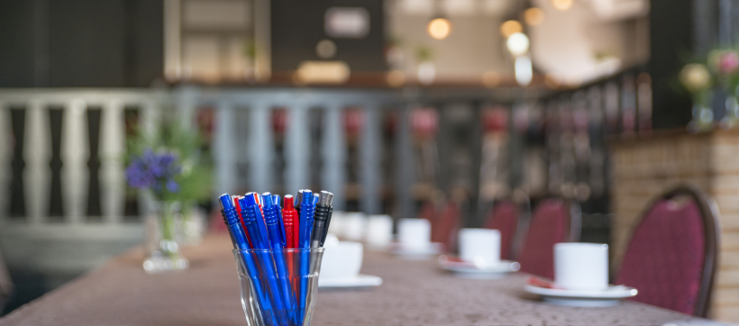

Café-zalen · Westerblokker 80, Blokker
Het Gouden Hoofd
Van harte welkom in het dorpscafé van Blokker. Een biertje aan de bar, een potje biljart of darts, live muziek op zondagmiddag en twee zalen voor uw feest.


Gewoon gezellig, in het dorp
Het Gouden Hoofd is de perfecte plek om lekker en betaalbaar iets te eten en te drinken, met vrienden, familie of in groepen.
- Vriendelijke bediening en gezellige muziek
- Biljarten, met ons eigen driebandentoernooi
- Darten in het café
- Sport live op de schermen
- Live muziek op zondagmiddag, entree vrij
- Dorpstheater en toneel in de zaal

Openingstijden
Maandag en dinsdag zijn we dicht. Op zondag zijn we er vanaf vier uur, en vanaf vijf uur staat de keuken aan.
| Maandag | gesloten |
|---|---|
| Dinsdag | gesloten |
| Woensdag | 20.00 – 00.00 |
| Donderdag | 20.00 – 00.00 |
| Vrijdag | 20.00 – 02.00 |
| Zaterdag | 20.00 – 02.00 |
| Zondag | 16.00 – 00.00 keuken vanaf 17.00 |
Eten op zondag
Op zondag is de keuken open vanaf 17.00 uur. Op andere dagen koken we voor groepen vanaf 10 personen, in overleg. Elke zondag is er ook een wisselende daghap; die maken we bekend op Facebook.
Afhalen op zondag
Kan ook. App tijdig naar 06-52511364 of 06-36501695.
Maaltijdsalades
- Carpaccio maaltijdsalade
- 17,50
- met pesto- of truffeldressing
- Zalm maaltijdsalade*
- 18,50
- mango, avocado, cashewnoten
Hoofdgerechten
- Spareribs XL
- 22,50
- gemarineerd, met huisgemaakte knoflooksaus
- Biefstuk speciaal
- 23,50
- champignons, ui, paprika
- Kip shoarma
- 18,50
- met brood en huisgemaakte knoflooksaus
- Kipschnitzel
- 18,50
- met gebakken ei, ui en spek
- Kipsaté
- 18,50
- twee spiezen, uitjes, kroepoek, pindasaus
- Zalmfilet*
- 18,50
- twee filets met dillesaus
Burgers & broodjes
- Kipburger speciaal
- 14,50
- cheddar, spek
- Hamburger speciaal
- 14,50
- cheddar, spek, ui, tomaat
- Broodje bal speciaal
- 14,50
- gebakken ui, mayonaise en/of pindasaus
Vooraf & toe
- Stokbrood
- 4,50
- met kruidenboter of aioli
- Soep van de dag
- 6,50
- Carpaccio salade
- 9,50
- Vanille-ijs
- 6,50
- twee bollen, met slagroom en vers fruit
Alle gerechten (behalve de maaltijdsalades) met salade en frites.
* indien voorradig. Prijzen in euro.

Agenda
Muziek, biljart, poker, quiz en toneel. Bij de zondagmiddagconcerten om 16.30 uur is de entree vrij.
Finale HGH Driebandentoernooi
zaterdag
Het Dok
zondag · covers van De Dijk · 16.30 uur, entree vrij
Kroegenspektakel
zaterdag
Jeugdprinsbekendmaking
zondag
Timboektoe Band
zondag · 16.30 uur, entree vrij
55+ middag De Blockeniers
maandag · 14.00 uur, entree vrij
Toneeluitvoeringen Michaël
za 13 en zo 14 maart (matinee), vr 19 en za 20 maart · kaarten bij Loes Beemster, 0229-232781
The Shambles
zondag · 16.30 uur, entree vrij
Pubquiz
vrijdag
Biljart: Battle of Blokker
zaterdag
Poker ONKP
vrijdag
Tour en Bloc: trekkingsavond
vrijdag · 19.00 – 22.30 uur
Tour en Bloc: slotavond
vrijdag · 20.30 uur
Jaarmarkt Blokker
zaterdag · live muziek van RAND0M vanaf 17.00 uur in het voorcafé
Kermis Westerblokker
vrijdag 10 t/m dinsdag 14 september

Twee zalen voor uw feest
Een grote benedenzaal of een kleinere bovenzaal: geknipt voor bruiloften, feesten, reünies, een bijeenkomst na een uitvaart, vergaderingen en informatieavonden. Op een steenworp van de binnenstad van Hoorn en de belangrijke uitvalswegen.
Arrangement, all-in
vanaf € 35,50 per persoon
Een compleet verzorgde feestavond met vlotte bediening. U kiest wat past:
- warm of koud buffet
- koffietafel
- broodmaaltijd
- meergangendiner
We stemmen het arrangement af op uw wensen. Neem contact op, dan bespreken we de mogelijkheden.
Kom langs
Het Gouden HoofdWesterblokker 80
1695 AJ Blokker
- Telefoon & WhatsApp06-52511364
- Tweede nummer06-36501695
- E-mailinfo@hetgoudenhoofd.nl
- Facebookcafehetgoudenhoofdblokker